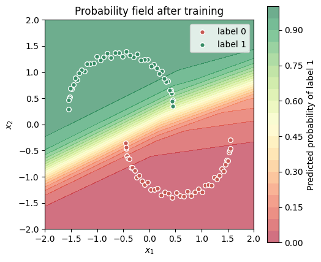
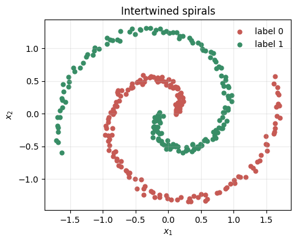
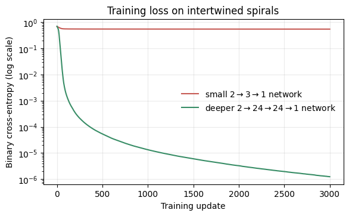

This notebook implements backpropagation for a small binary-classification neural network using only NumPy. We use the same \(2 \rightarrow 3 \rightarrow 1\) architecture as the interactive explorer: two inputs, three ReLU hidden units, and one sigmoid output unit.
What you will do
Create a two-class half-moons dataset.
Implement a forward pass through a \(2 \rightarrow 3 \rightarrow 1\) network.
Trace the gradients for one labeled observation.
Average gradients over the full dataset and update every parameter.
Watch the loss and the learned probability field change over 50 gradient-descent updates.
1. A small half-moons classification problem
The two coordinates are toy input features, and the label is either 0 or 1. This intentionally small example lets us see every intermediate array. Unlike the gas-turbine examples, this is not intended as a realistic mechanical-system model.
import matplotlib.pyplot as pltimport numpy as npdef make_half_moons(*, points_per_class: int=44) ->tuple[np.ndarray, np.ndarray]:"""Create a deterministic two-class half-moons dataset. Args: points_per_class: Number of observations in each moon. Returns: A tuple containing a feature matrix with shape (n, 2) and a column-vector label array with shape (n, 1). """ fractions = np.linspace(0.0, 1.0, points_per_class) angles = np.pi * fractions wobble =0.055* np.sin(np.arange(points_per_class) *2.3) positive = np.column_stack((-0.55+ np.cos(angles),0.35+ np.sin(angles) + wobble, )) negative = np.column_stack((0.55- np.cos(angles),-0.35- np.sin(angles) - wobble, )) features = np.empty((2* points_per_class, 2), dtype=float) labels = np.empty((2* points_per_class, 1), dtype=float) features[0::2] = positive features[1::2] = negative labels[0::2, 0] =1.0 labels[1::2, 0] =0.0return features, labelsX, Y = make_half_moons()print(f"X shape: {X.shape}")print(f"Y shape: {Y.shape}")
A training update uses every half-moons observation. The formulas above first produce a per-observation error signal; loss_and_gradients averages those signals when constructing \(dL/dW^{[1]}\), \(dL/db^{[1]}\), \(dL/dW^{[2]}\), and \(dL/db^{[2]}\).
Gradient descent then moves each parameter in the opposite direction:
def update_parameters( parameters: Parameters, gradients: Gradients, learning_rate: float,) -> Parameters:"""Return parameters after one gradient-descent update. Args: parameters: Current network parameters. gradients: Mean gradients for the corresponding parameters. learning_rate: Positive gradient-descent step size. Returns: A new parameter dictionary after moving opposite each gradient. """return { name: values - learning_rate * gradients[name]for name, values in parameters.items() }full_loss, full_gradients, _ = loss_and_gradients(X, Y, parameters)print(f"Initial full-dataset loss: {full_loss:.3f}")for name, gradient in full_gradients.items():print(f"dL/d{name}: shape {gradient.shape}, mean {gradient.mean():+.4f}")
Initial full-dataset loss: 0.751
dL/dW1: shape (3, 2), mean -0.0240
dL/db1: shape (1, 3), mean +0.0096
dL/dW2: shape (1, 3), mean +0.2568
dL/db2: shape (1, 1), mean +0.2203
5. Train for 50 full-batch updates
We start from the fixed parameters above. Each update computes the full-dataset gradient, then changes all weights and biases once. This is full-batch gradient descent, not stochastic gradient descent.
Loss before training: 0.751
Loss after 50 updates: 0.044
6. Inspect the learned probability field
The colored background shows \(A^{[2]}\), the model’s predicted probability of label 1. The network was never told an explicit boundary shape; it changed its weights and biases using gradients of the loss.
def plot_probability_field( features: np.ndarray, labels: np.ndarray, parameters: Parameters,) ->None:"""Plot the network probability field and the labeled observations. Args: features: Observed two-dimensional feature matrix. labels: Binary labels corresponding to `features`. parameters: Fitted network parameters used to compute probabilities. """ axis_values = np.linspace(-2.0, 2.0, 180) x1_grid, x2_grid = np.meshgrid(axis_values, axis_values) grid_features = np.column_stack((x1_grid.ravel(), x2_grid.ravel())) grid_probabilities, _ = forward_pass(grid_features, parameters) fig, ax = plt.subplots(figsize=(5.5, 5.0)) image = ax.contourf( x1_grid, x2_grid, grid_probabilities.reshape(x1_grid.shape), levels=np.linspace(0.0, 1.0, 21), cmap="RdYlGn", alpha=0.58, ) ax.scatter(features[labels[:, 0] ==0, 0], features[labels[:, 0] ==0, 1], color="#c65a54", edgecolor="white", s=30, label="label 0") ax.scatter(features[labels[:, 0] ==1, 0], features[labels[:, 0] ==1, 1], color="#388d66", edgecolor="white", s=30, label="label 1") fig.colorbar(image, ax=ax, label="Predicted probability of label 1") ax.set(xlabel="$x_1$", ylabel="$x_2$", title="Probability field after training", xlim=(-2, 2), ylim=(-2, 2)) ax.set_aspect("equal") ax.legend(frameon=True, loc="upper right") plt.show()trained_probabilities, _ = forward_pass(X, trained_parameters)training_accuracy = np.mean((trained_probabilities >=0.5) == Y)print(f"Training accuracy after {n_updates} updates: {training_accuracy:.1%}")plot_probability_field(X, Y, trained_parameters)
Training accuracy after 50 updates: 100.0%

7. Build and train a deeper network with PyTorch
The NumPy implementation exposed every intermediate array and every gradient. In practice, a library such as PyTorch keeps the same forward-pass and gradient-descent logic, while its automatic differentiation system computes the gradients.
We now use two intertwined spirals. This pattern is deliberately more complicated than the half moons: the small \(2 \to 3 \to 1\) network has too few ReLU regions to represent it well. We will compare that small network with a deeper, wider \(2 \to 24 \to 24 \to 1\) network. All points are used for training here so that the comparison isolates model capacity rather than generalization.
import torchfrom torch import nndef make_intertwined_spirals(*, points_per_class: int=160, noise_scale: float=0.035, random_seed: int=7,) ->tuple[np.ndarray, np.ndarray]:"""Create a deterministic binary-classification dataset of two spirals. Args: points_per_class: Number of observations in each spiral. noise_scale: Standard deviation of the coordinate perturbation. random_seed: Seed used for the perturbation and row ordering. Returns: A feature matrix with shape (n, 2) and a column-vector label array with shape (n, 1). """ generator = np.random.default_rng(random_seed) angles = np.linspace(0.15, 1.05*2.0* np.pi, points_per_class) radii = np.linspace(0.12, 1.75, points_per_class) spiral_zero = np.column_stack((radii * np.cos(angles), radii * np.sin(angles))) spiral_one = np.column_stack((radii * np.cos(angles + np.pi), radii * np.sin(angles + np.pi))) features = np.vstack((spiral_zero, spiral_one)) features += generator.normal(scale=noise_scale, size=features.shape) labels = np.concatenate((np.zeros(points_per_class), np.ones(points_per_class)))[:, None] row_order = generator.permutation(features.shape[0])return features[row_order], labels[row_order]spiral_features, spiral_labels = make_intertwined_spirals()spiral_features_tensor = torch.tensor(spiral_features, dtype=torch.float32)spiral_labels_tensor = torch.tensor(spiral_labels, dtype=torch.float32)fig, ax = plt.subplots(figsize=(5.2, 5.0))ax.scatter(spiral_features[spiral_labels[:, 0] ==0, 0], spiral_features[spiral_labels[:, 0] ==0, 1], color="#c65a54", s=24, label="label 0")ax.scatter(spiral_features[spiral_labels[:, 0] ==1, 0], spiral_features[spiral_labels[:, 0] ==1, 1], color="#388d66", s=24, label="label 1")ax.set(xlabel="$x_1$", ylabel="$x_2$", title="Intertwined spirals")ax.set_aspect("equal")ax.legend(frameon=False)ax.grid(alpha=0.25)plt.show()

7.1 Define the two networks
nn.Linear represents one affine layer, including both its weights and bias. We leave the final layer as a logit—a real-valued score—and use BCEWithLogitsLoss, which applies the sigmoid internally in a numerically stable way. At prediction time, we explicitly apply torch.sigmoid to convert a logit to a probability.
The training loop has the same conceptual steps as the NumPy version: forward pass, binary cross-entropy loss, backward pass, and parameter update. loss.backward() performs the backward pass and stores gradients in the model parameters; optimizer.step() applies the update.
def train_model(*, model: nn.Module, features: torch.Tensor, labels: torch.Tensor, n_updates: int, learning_rate: float,) ->list[float]:"""Train a binary classifier with full-batch gradient descent. Args: model: Neural network mapping two features to one logit. features: Input tensor with shape (n, 2). labels: Binary column-vector tensor with shape (n, 1). n_updates: Number of full-batch optimization updates. learning_rate: Adam optimizer step size. Returns: The binary cross-entropy loss after each update. """ loss_function = nn.BCEWithLogitsLoss() optimizer = torch.optim.Adam(params=model.parameters(), lr=learning_rate) loss_history: list[float] = []for _ inrange(n_updates): optimizer.zero_grad() logits = model(features) loss = loss_function(logits, labels) loss.backward() optimizer.step() loss_history.append(loss.item())return loss_historysmall_loss_history = train_model( model=small_model, features=spiral_features_tensor, labels=spiral_labels_tensor, n_updates=3_000, learning_rate=0.03,)deep_loss_history = train_model( model=deep_model, features=spiral_features_tensor, labels=spiral_labels_tensor, n_updates=3_000, learning_rate=0.02,)fig, ax = plt.subplots(figsize=(6.5, 3.6))ax.semilogy(small_loss_history, color="#c65a54", label="small $2 \\to 3 \\to 1$ network")ax.semilogy(deep_loss_history, color="#388d66", label="deeper $2 \\to 24 \\to 24 \\to 1$ network")ax.set(xlabel="Training update", ylabel="Binary cross-entropy (log scale)", title="Training loss on intertwined spirals")ax.legend(frameon=False)ax.grid(alpha=0.25)plt.show()

7.3 Compare the learned probability fields
A low loss is useful, but the probability fields make the difference tangible. The small network draws only a coarse boundary. The deeper, wider network has enough nonlinear pieces to follow the spiral pattern.
Small-network training accuracy: 71.9%
Deeper-network training accuracy: 100.0%
Takeaway
Backpropagation is an efficient application of the chain rule. A forward pass stores intermediate values; the backward pass begins with the output error \(A^{[2]}-Y\) and reuses those values to compute gradients for every weight and bias. Gradient descent then adds many small parameter updates to reduce the loss.